First, read the following article that describes how to create layouts with flexbox:
CSS Tricks Flexbox Article. The article is laid out so that rules for the flexbox container are listed in the left column and the rules for the contained flexbox items are listed in the right column.
Then complete the seven exercises below. In each you have to turn an element in file index.html into a flexbox with particular properties.
Before starting on the exercises, open the file index.html in a text editor and inspect its contents. The elements intended to become flexbox containers have been given ids c1, c2 etc. and they each contain 8 elements.
The only file you are allowed to edit is flexbox_exercise.css.
You should not define any new classes or ids but you will have to add new rulesets into the file flexbox_exercise.css. For example, to define rules for the first container, you will add ruleset #c1{...} and to add rules for the second item in the third container you will add
the ruleset #c3>.two{...}.
Exercise 0
Turn the elements of class flex-container in index.html into a flexbox, by adding a display property with the appropriate value in the CSS file.
Exercise 1
Use properties justify-content and align-items on the element with id c1 to achieve the rendering of elements shown in the pictures for two different browser widths.
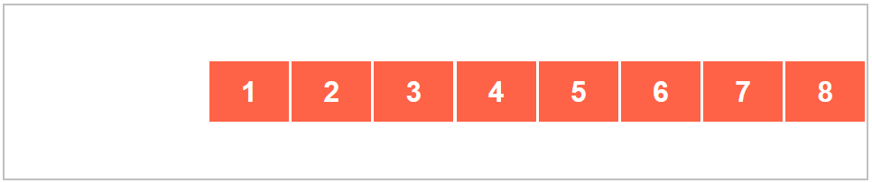
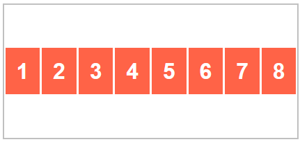
Exercise 2
Use properties justify-content and flex-wrap on the element with id c2 to achieve the rendering of elements shown in the pictures for two different browser widths.
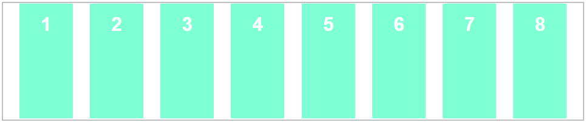
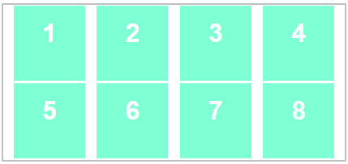
Exercise 3
Use properties flex-direction, flex-wrap, justify-content and align-content on the element with id c3 to achieve the rendering of elements shown in the pictures for two different browser widths.
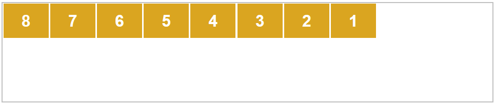
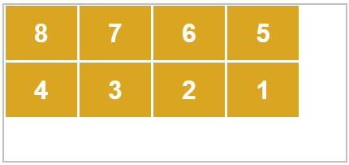
Exercise 4
Add the following CSS rule for the element with id c4: height: 12rem;
Now use properties flex-direction, flex-wrap, justify-content and align-content on the element with id c4 to achieve the rendering of elements shown in the pictures for two different browser widths. Remember that justify-content, which normally arranges elements horizontally, will be arranging the elements vertically as they are listed in columns rather than rows. Similarly, align-content will be affecting the horizontal arrangement.
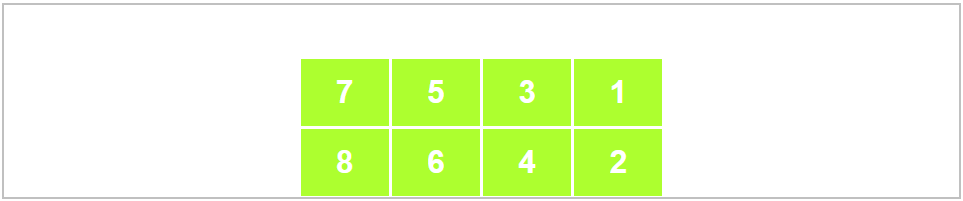
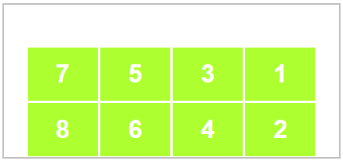
Exercise 5
Use property justify-content on the element with id c5 and properties align-self and order on its child elements, to achieve the rendering of elements shown in the pictures for two different browser widths.
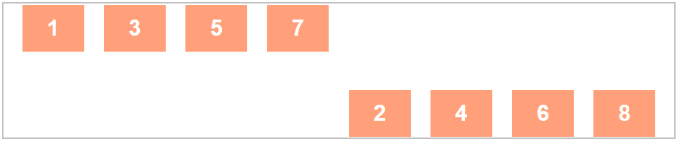
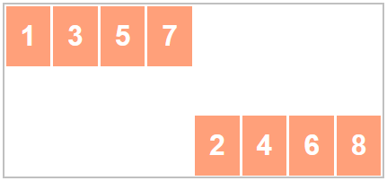
Exercise 6
Use property flex-grow on the child elements of the element with id c6 to achieve the rendering of elements shown in the pictures for two different browser widths.
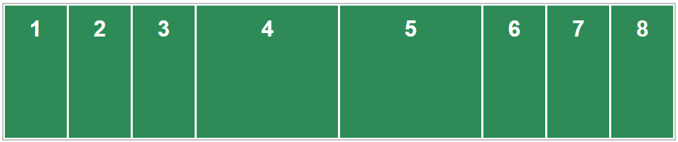
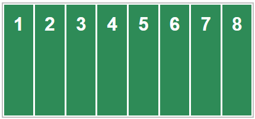
Exercise 7
Use property flex-basis on the child elements of the element with id c7 to achieve the rendering of elements shown in the pictures for two different browser widths. Item 1 and 3 take up a quarter of the flexbox width each and item 2 takes up half of it.